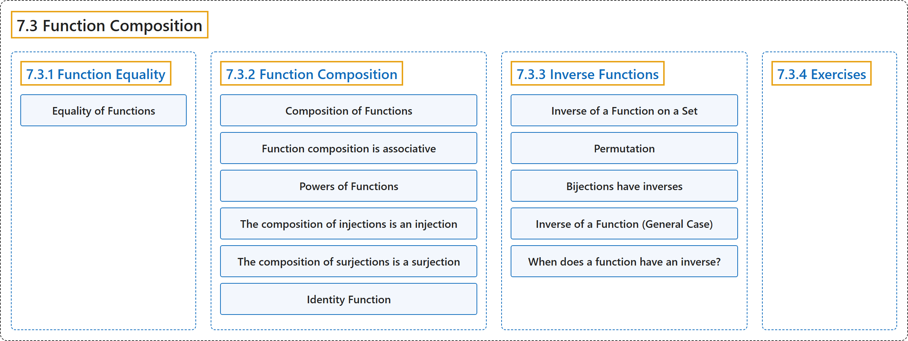

7.3 Function Composition
Classification

Glossary
| Term | Definition | 中文翻译 | Source |
|---|---|---|---|
| 7.3 Function Composition 函数的复合 |
(context) "Now that we have a good understanding of what a function is, our next step is to consider an important operation on functions." | （语境）“既然我们已经很好地理解了函数是什么，下一步就是讨论函数上的一种重要运算。” | Doerr & Levasseur, n.d., section 7.3, para. 1 |
| 7.3.1 Function Equality 函数相等 |
(No definition) | （无定义） | Doerr & Levasseur, n.d., subsection 7.3.1 |
| Equality of Functions 函数相等 |
"Let \(f, g:A \rightarrow B\text{;}\) that is, let \(f\) and \(g\) both be functions from \(A\) into \(B\text{.}\) Then \(f\) is equal to \(g\) (denoted \(f=g\)) if and only if \(f(x) = g(x)\) for all \(x \in A\text{.}\)" | 设 \(f, g:A \rightarrow B\)；即设 \(f\) 和 \(g\) 都是从 \(A\) 到 \(B\)。 的函数。则 \(f\) 等于 \(g\)（记作 \(f=g\)），当且仅当对所有 \(x \in A\)。 有 \(f(x) = g(x)\)。 | Doerr & Levasseur, n.d., Definition 7.3.1 |
| 7.3.2 Function Composition 函数的复合 |
(context) "One of the most important operations on functions is that of composition." | （语境）“函数上最重要的运算之一是复合。” | Doerr & Levasseur, n.d., subsection 7.3.2, para. 1 |
| Composition of Functions 函数的复合 |
"Let \(f:A \rightarrow B\) and \(g:B \rightarrow C\text{.}\) Then the composition of \(f\) followed by \(g\text{,}\) written \(g\circ f\text{,}\) is a function from \(A\) into \(C\) defined by \((g \circ f)(x) = g(f(x))\text{,}\) which is read “\(g\) of \(f\) of \(x\text{.}\)”" | 设 \(f:A \rightarrow B\)，\(g:B \rightarrow C\)。则先 \(f\) 后 \(g\) 的复合，记作 \(g\circ f\)，是从 \(A\) 到 \(C\) 的函数，定义为 \((g \circ f)(x) = g(f(x))\)，读作“\(g\) of \(f\) of \(x\)。”。 | Doerr & Levasseur, n.d., Definition 7.3.2 |
| Function composition is associative 函数复合满足结合律 |
"If \(f:A\rightarrow B\), \(g:B\to C\), and \(h:C\rightarrow D\), then \(h\circ (g\circ f) = (h\circ g)\circ f\)." | 若 \(f:A\rightarrow B\)、\(g:B\to C\) 且 \(h:C\rightarrow D\)，则 \(h\circ (g\circ f) = (h\circ g)\circ f\)。 | Doerr & Levasseur, n.d., Theorem 7.3.4 |
| Powers of Functions 函数的幂 |
"Let \(f: A\to A\text{.}\)" | 设 \(f: A\to A\)。。 | Doerr & Levasseur, n.d., Definition 7.3.5 |
| The composition of injections is an injection 单射的复合是单射 |
"If \(f: A \rightarrow B\) and \(g : B \rightarrow C\) are injections, then \(g\circ f : A \rightarrow C\) is an injection." | 若 \(f: A \rightarrow B\) 和 \(g : B \rightarrow C\) 是单射，则 \(g\circ f : A \rightarrow C\) 是单射。 | Doerr & Levasseur, n.d., Theorem 7.3.6 |
| The composition of surjections is a surjection 满射的复合是满射 |
"If \(f : A \rightarrow B\) and \(g: B \rightarrow C\) are surjections, then \(g\circ f: A \rightarrow C\) is a surjection." | 若 \(f : A \rightarrow B\) 和 \(g: B \rightarrow C\) 是满射，则 \(g\circ f: A \rightarrow C\) 是满射。 | Doerr & Levasseur, n.d., Theorem 7.3.7 |
| Identity Function 恒等函数 |
"For any set \(A\text{,}\) the identity function on \(A\) is a function from \(A\) onto \(A\text{,}\) denoted by \(i\) (or, more specifically, \(i_A\)) such that \(i(a) = a\) for all \(a\in A\text{.}\)" | 对任意集合 \(A\)，\(A\) 上的恒等函数是从 \(A\) 到 \(A\) 的满射函数，记作 \(i\)（或更具体地记作 \(i_A\)），使得对所有 \(a\in A\)。 都有 \(i(a) = a\)。 | Doerr & Levasseur, n.d., Definition 7.3.8 |
| 7.3.3 Inverse Functions 反函数 |
(context) "We will introduce the inverse of a function with a special case: the inverse of a function on a set." | （语境）“我们将从一个特殊情形引入函数的逆：集合上函数的逆。” | Doerr & Levasseur, n.d., subsection 7.3.3, para. 1 |
| Inverse of a Function on a Set 集合上函数的逆 |
"Let \(f: A\rightarrow A\text{.}\) If there exists a function \(g: A \rightarrow A\) such that \(g\circ f = f\circ g = i\text{,}\) then \(g\) is called the inverse of \(f\) and is denoted by \(f^{-1}\), read “\(f\) inverse.”" | 设 \(f: A\rightarrow A\)。若存在函数 \(g: A \rightarrow A\) 使得 \(g\circ f = f\circ g = i\)，则称 \(g\) 为 \(f\) 的逆，记作 \(f^{-1}\)，读作“\(f\) inverse”。 | Doerr & Levasseur, n.d., Definition 7.3.11 |
| Permutation 排列 |
"A bijection of a set \(A\) into itself is called a permutation of \(A\text{.}\)" | 集合 \(A\) 到其自身的双射称为 \(A\) 的排列。 | Doerr & Levasseur, n.d., Definition 7.3.15 |
| Bijections have inverses 双射有逆 |
"Let \(f: A\rightarrow A\). \(f^{-1}\) exists if and only if f is a bijection; i. e. f is one-to-one and onto." | 设 \(f: A\rightarrow A\)。\(f^{-1}\) 存在当且仅当 f 是双射；即 f 是单射且满射。 | Doerr & Levasseur, n.d., Theorem 7.3.14 |
| Inverse of a Function (General Case) 函数的逆（一般情形） |
"Let \(f:A \rightarrow B\text{,}\) If there exists a function \(g:B \rightarrow A\) such that \(g \circ f = i_A\) and \(f\circ g = i_B\), then \(g\) is called the inverse of \(f\) and is denoted by \(f^{-1}\), read “\(f\) inverse.”" | 设 \(f:A \rightarrow B\)，若存在函数 \(g:B \rightarrow A\) 使得 \(g \circ f = i_A\) 且 \(f\circ g = i_B\)，则称 \(g\) 为 \(f\) 的逆，记作 \(f^{-1}\)，读作“\(f\) inverse”。 | Doerr & Levasseur, n.d., Definition 7.3.16 |
| When does a function have an inverse? 函数何时有逆？ |
"Let \(f:A \rightarrow B\). \(f^{-1}\) exists if and only if f is a bijection." | 设 \(f:A \rightarrow B\)。\(f^{-1}\) 存在当且仅当 f 是双射。 | Doerr & Levasseur, n.d., Theorem 7.3.17 |
| 7.3.4 Exercises 练习 |
(No definition) | （无定义） | Doerr & Levasseur, n.d., subsection 7.3.4 |
References
Doerr, A., & Levasseur, K. (n.d.). Applied discrete structures. Retrieved October 28, 2026, from https://discretemath.org/ads/index-ads.html